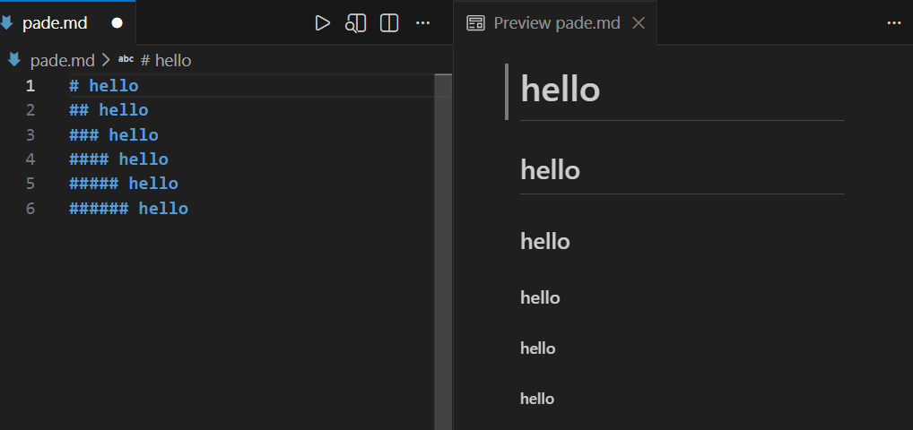
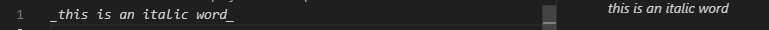
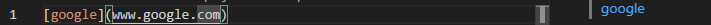

------markdown------
#write on 25/11/2025 at 13:44
1-what is markdown language?> Markdown is a lightweight markup language used for creating formatted text using a
plain-text editor. It was created by John Gruber in 2004 with the goal of making a markup
language that is easy to read and write.
> you can use markdown language to creating formatted text,you can use it in github to write
post or to building a website, it a very easy language.
i learned this language in 30min , but for website i always use HTML to improve it ,
so markdown it's for simply text not like HTML it builded for website
> first you have to use a studio code app for example visual studio code
- create a file with .md in the end like file.md
- if you use visual studio code you can install Markdown All in One to help you
> in markdown language to write a title you have to use # and we have six type :
# it the most big refer to h1
## it's the second refer to h2
....
###### it's the most small refer to h6

>to write an italic word you have to use _ or *
for exemple:

also for a strong word you use __ or **

>now haw to create a link it's easy [name](url)

>order list: 1.
2.
...
>to write a code do this
```python
print("hello")
```
>this for image
 >and finaly this for table:
|name|age|
|----|----|
|wolf|16|
this is what i learned i think a had to use it for website because it's easy
have fine!